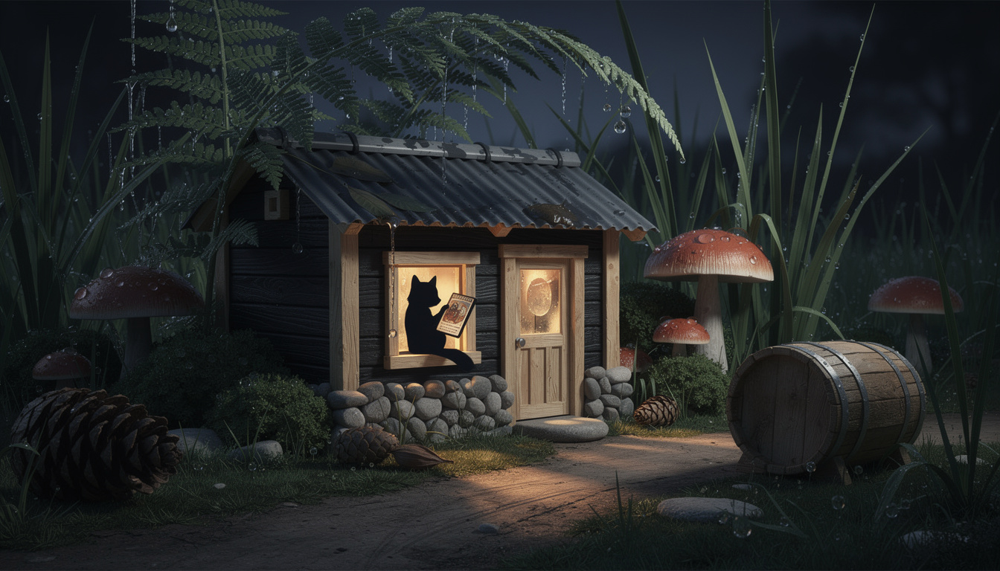
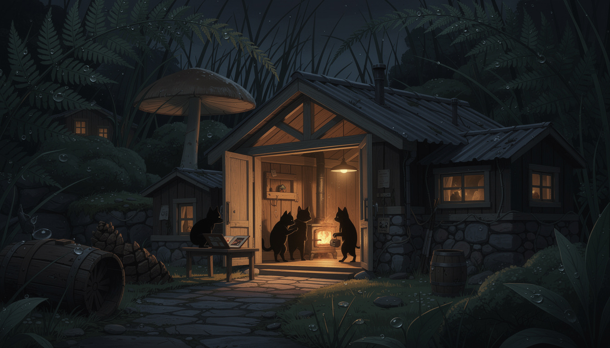
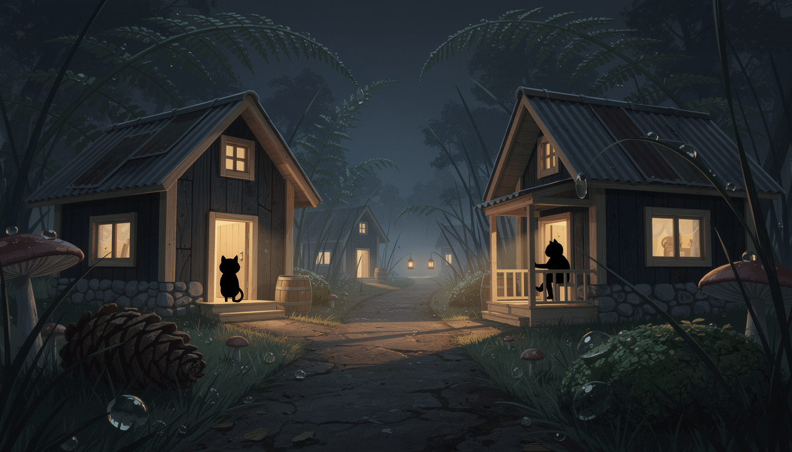

scale told by nature · presence told by silhouette · internal concept

{this.src=s+'?r='+this.dataset.r},700*this.dataset.r)}">
the windowA resident holds a single card up to the lamp — nearly as tall as it is. Ferns drip overhead, pinecones outsize the barrel, mushrooms stand shoulder-high to the door. Reverence and scale in one frame.

{this.src=s+'?r='+this.dataset.r},700*this.dataset.r)}">
the hallFour shapes around the stove, one at a table with an album open. Every one of them featureless, and the room still tells you everything.

{this.src=s+'?r='+this.dataset.r},700*this.dataset.r)}">
the laneA shape in a lit doorway, another on a veranda rail, two lanterns far down the mist. Fern fronds arch over the rooflines.